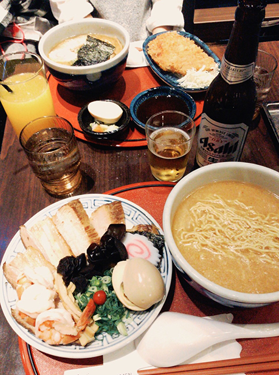

營業：周日～周四 11:00~22:30 周五、周六 11:00~23:00
電話：02-2558-2577
位在京站一樓的日式拉麵店，打電話要預約，但是店員說只能現場候位，過去時 已經有人在排隊，大約等了15~20分鐘
湯頭 有四種可以選擇：
份量 有三種可以選擇：
圖擷取自： 樂活的大方@旅行玩樂學~
我點了小碗醬油口味的拉麵 麵很Q彈，湯頭也很濃郁，但是吃久了會覺得有點鹹 推薦給大家喔!

小碗的分量不多，但是還是會飽哦